A terminal that reads your shell
Moth is a native terminal for macOS, Linux and Windows, built on Zed’s gpui. It turns your shell’s output into commands you can jump to, copy and search.
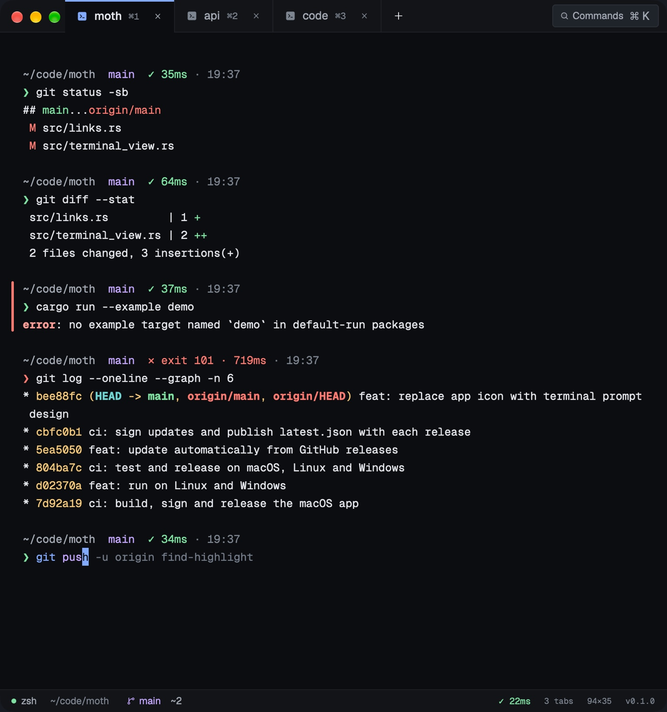
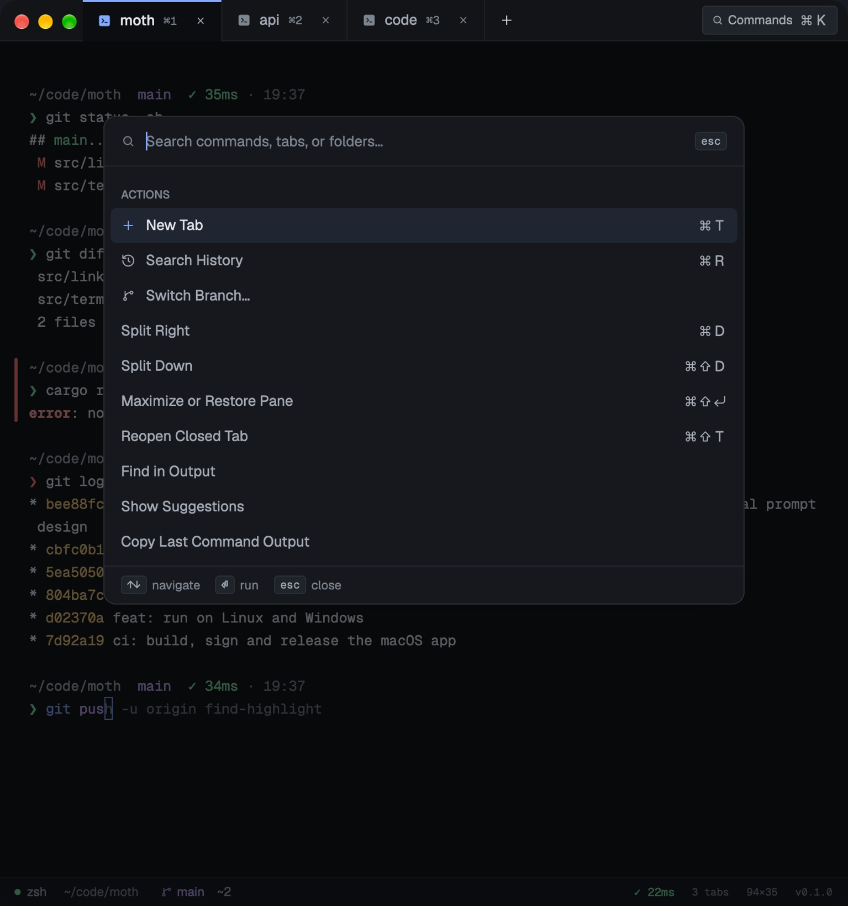
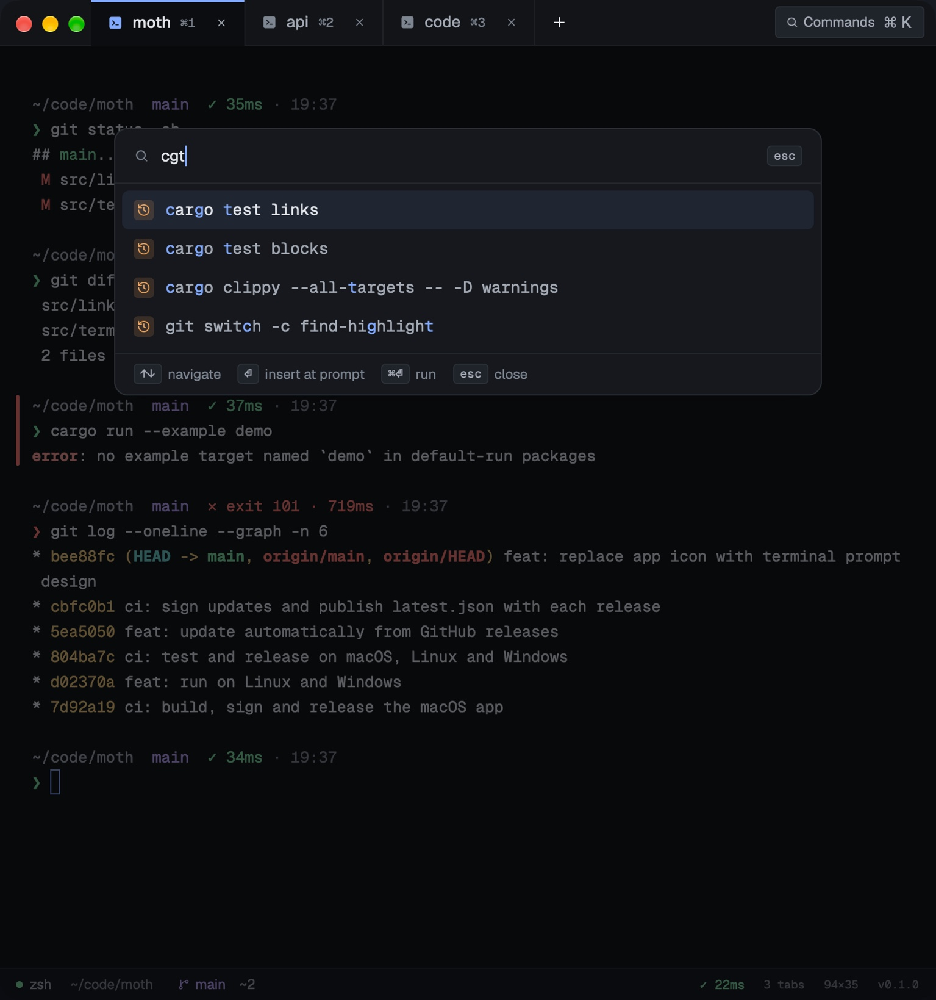
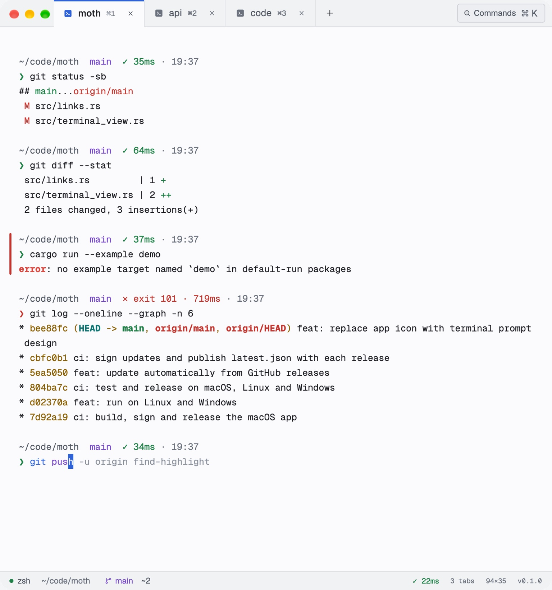
First, it reads your line
As you type, the command, its subcommand, flags, strings and paths take the theme’s colours, an unknown command gets a red squiggle, and the rest of your last matching command waits in gray. → accepts it.
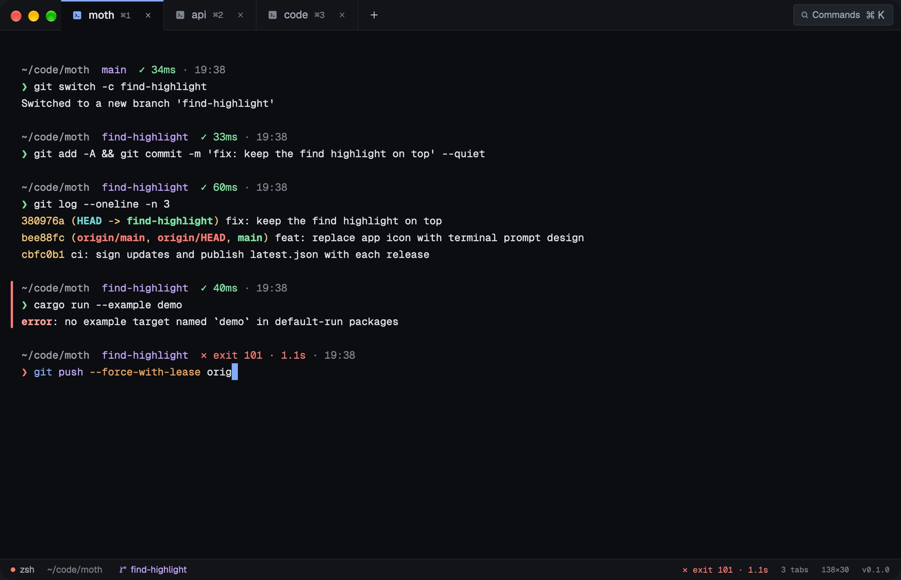
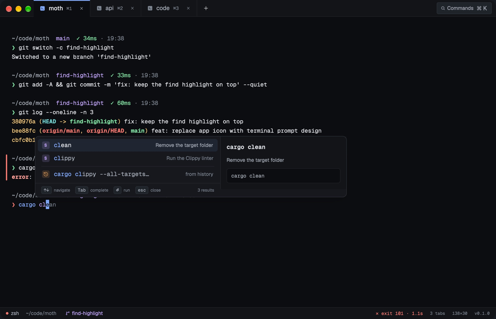
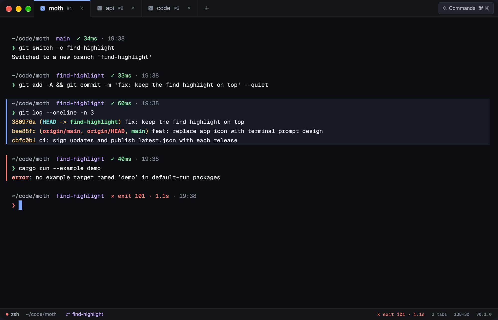
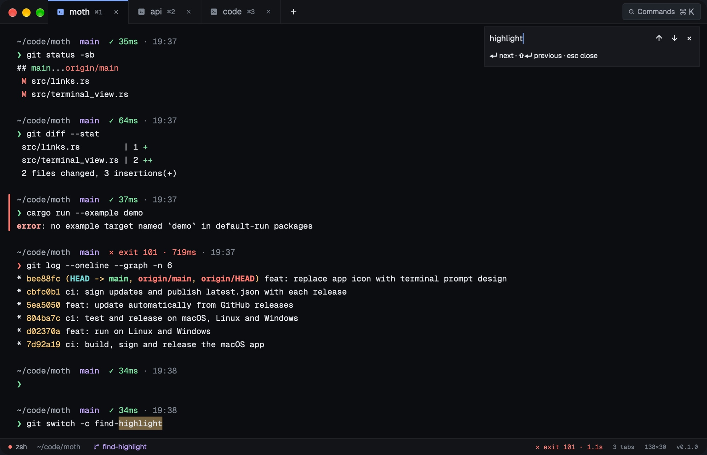
- Type
- Complete ⌃Space
- Jump ⌘↑
- Find ⌘F
Type in Graphite
The prompt in this window follows the rules of Moth’s highlighter. Type a command: → takes the gray suggestion from your history, ⏎ files it as a block.
Right arrow or End accepts the suggestion. Enter files the line as a block.
One file of settings
Everything below is a key in config.json, set to its default. Flip one and config.json changes with it. Moth rereads it when the window regains focus.
-
Reopen every window where you left it
Windows, tabs and split panes return in their folders after ⌘Q. Processes and SSH sessions do not.
-
Tell me when a long command ends
A run of 10 seconds or more that ends in the background posts whether it passed, the command and how long it took.
-
Look for signed updates every six hours
An update installs only when its SHA-256 and its minisign signature match the release’s latest.json.
-
Let Tab open Moth’s suggestions
Tab opens the popup instead of zsh’s completion. ⌃Space keeps working either way.
{}Production looks like production
Run ssh and Moth resolves the host with ssh -G, so your ~/.ssh/config applies. A host that matches *prod* gets a red chip on its tab, a banner and a border, and pasting several lines asks first. If the connection drops, ⌘⇧R brings it back.
"hosts": [
{ "match": "prod-*", "label": "PROD", "color": "red", "production": true },
{ "match": "*.staging.internal", "label": "STG", "color": "cyan" }
]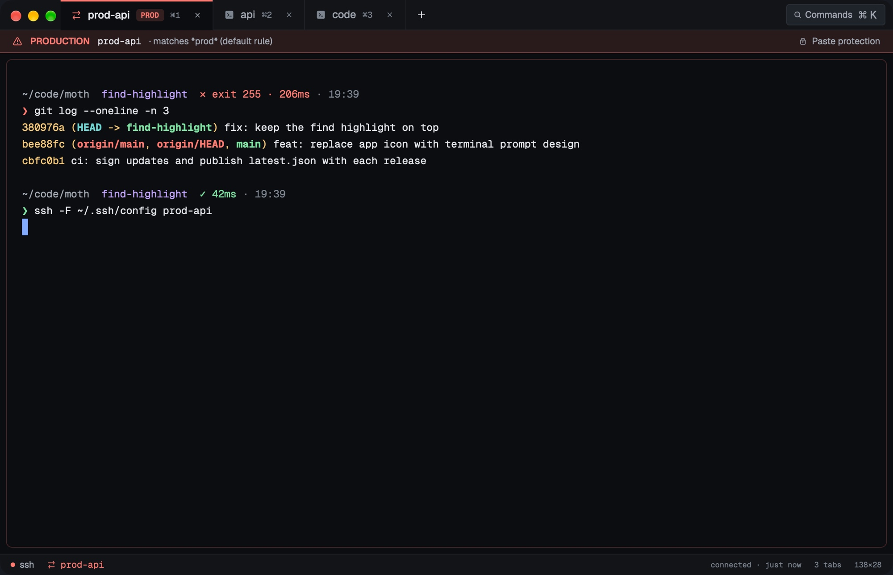
Split it, and it comes back
⌘D splits right, ⌘⇧D splits down, and dragging a divider resizes. ⌘⇧⏎ maximizes one pane. Quit with ⌘Q and the windows, tabs, panes and their folders open the same way next time.
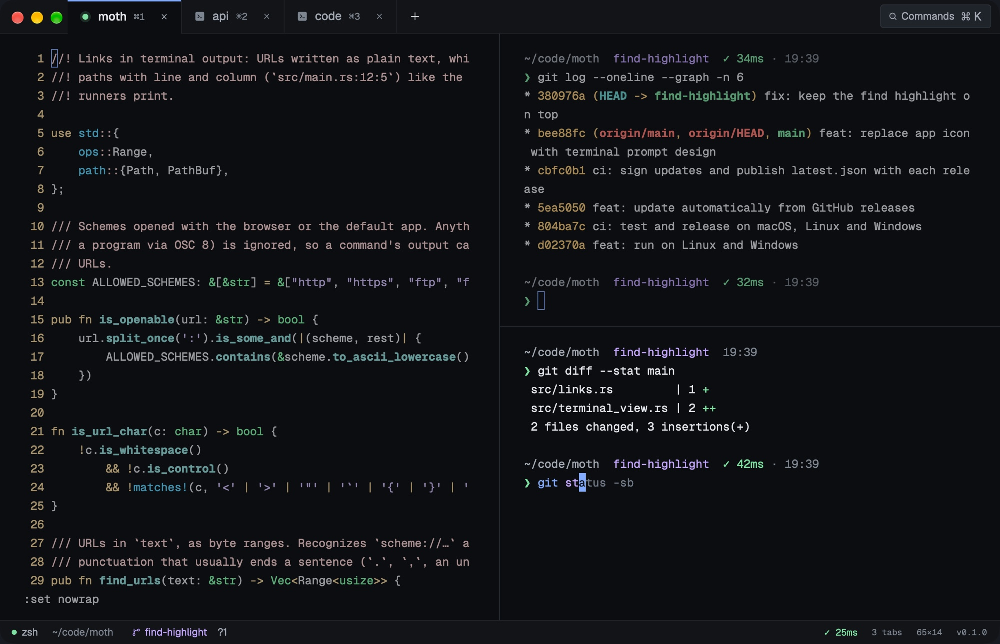
Keys
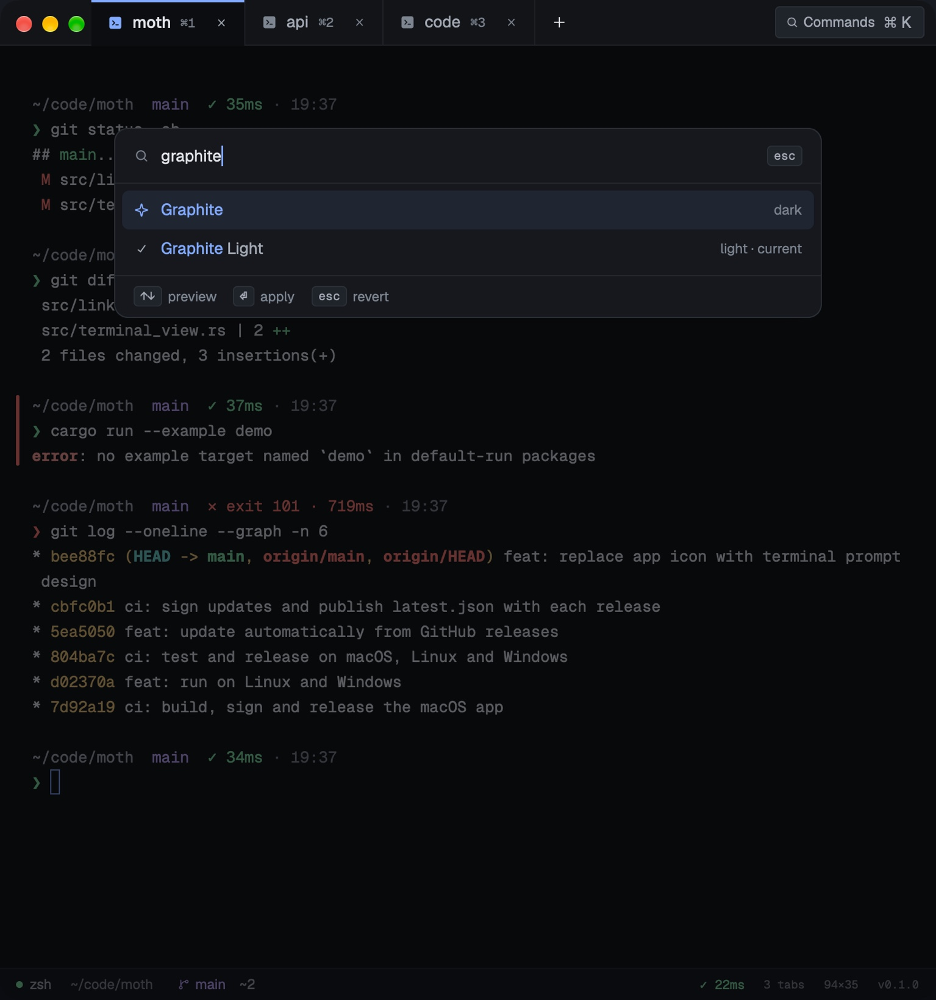
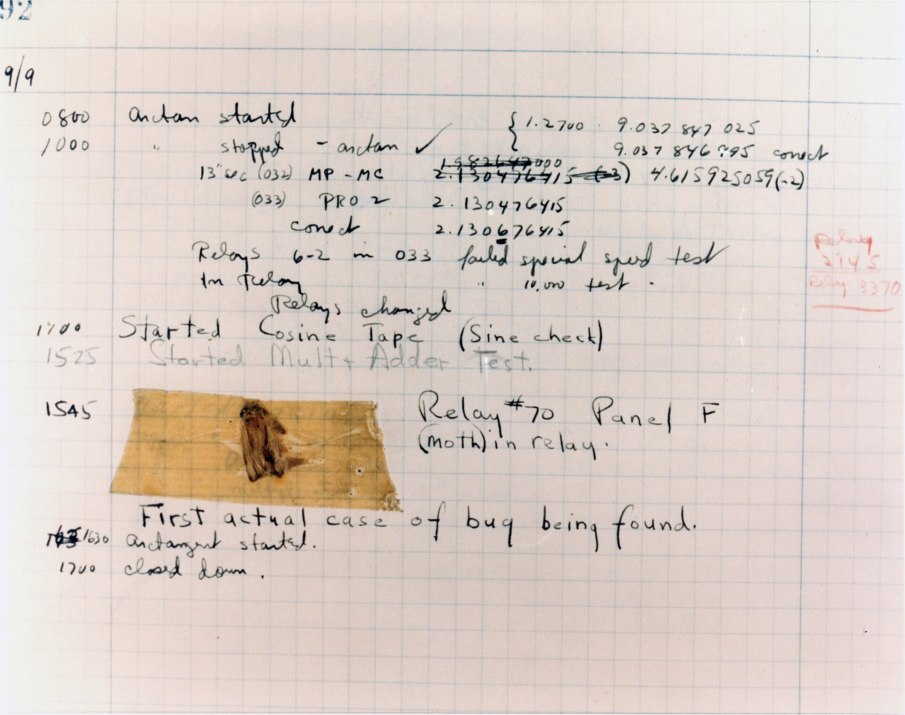
Named for the first bug
- 9 September 1947. At 15:25 the Harvard Mark II starts a multiply and adder test.
- At 15:45 the team finds a moth caught in relay 70, panel F.
- They tape it into the log: “First actual case of bug being found.”
- Moth is a terminal for finding the next one.
Download
Every release ships for three platforms, with SHA256SUMS beside the files. Once installed, Moth updates itself from signed releases.
From source
Rust 1.99, pinned in rust-toolchain.toml. On Linux, install the X11, Wayland and font headers first.
git clone https://github.com/angel-afonso/moth
cd moth && cargo run-
macOS
Moth.app for macOSOne universal app for Apple Silicon and Intel, as a
.dmgor a.zip. Releases aren’t notarized yet, so allow it once in Privacy & Security.Windows
moth.exe for WindowsAn x86_64
.zipwithmoth.exe. Unzip it anywhere and run it; it needs no runtime. SmartScreen may ask once.Linux
moth for LinuxAn x86_64
.tar.gzfor glibc 2.35 or newer: Ubuntu 22.04, Debian 12, Fedora 36../install.shadds it to the menu. Needs Vulkan.